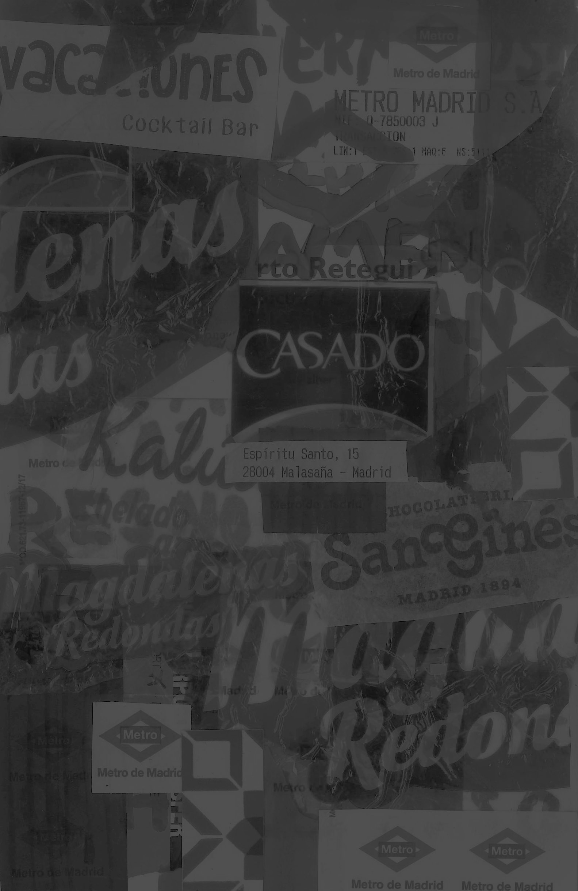

Biennale
I would only ever consider coming back here
in the winter time.
> Fewer crowds
> Less heat stroke induced by crowds
Location:
Materials:
Journal entry
Being at the Venice biennale triggered the same part of my brain as being back at the Richmond Children’s Museum – this was a playground for adults who love art. I honestly did not expect to love the experience of the Biennale as much as I did. Seeing the sheer quality of the work that real professionals produce was inspiring in itself. I am taking a folder of images and inspiration with me back to the United States as I continue my education. Being able to see the Biennale will likely be one of my favorite Sam Fox learning experiences.

"Y tus padres no te echan de menos?"
"Pues, sí, pero asisto a la Universidad
muy lejos de la casa, entonces estamos
acostumbrados a la distancia – y hoy
en día tenemos tecnología como el celular –"
"Sí, pero no es igual verles cara a cara"
Madrid
Location:
Materials:
Food wrappers, napkins, bar reciepts, marker
Journal entry
I sweet talked my way into the design school I’m hoping to spend my junior spring at to go snoop around the campus!! Of course it’s beautiful and an absolute dream. Then I found a nice spot in the shade in Retiro park and took a lovely nap in the grass. Laying my blanket out there, I truly had a moment of feeling like yes – this is exactly what I always hoped my life would be like. Being here for the weekend, sharing my love for this place has absolutely confirmed my decision to come back. I’m truly in love with this city and myself and my own future… which is uniquely uncertain and free in this phase of my life, open in a way it’ll never be again. At what other point in my life will I be able to say I have absolutely no idea what part of the world I’ll be in or what work I’ll be doing two years from now? I guess that can be frightening, and it might be blind optimism and naiveté, but I prefer to think of it as endlessly exciting.
*Pointing*
Here we have, uh
Marcus Aurelius
Disneyland
The Vatican
And the Italian Independence Building
WU Campus
Location:
Materials:
Journal entry
We took the night train to Vienna! This is actually my first time ever going to a foreign country speaking none of the language with no prep beforehand, so I’ve been a bit intimidated and embarrassed to have to speak English. Also this city is so clean and stunning and empty, but beautiful, and hollow? Not quite hollow. Not sure how exactly to feel about it yet. During our free time in the afternoon I snuck into the State Hall in the Austrian National Library and avoided the eight-euro entrance fee. The trick is to wait until a group is all going inside together and merge with the pack. I’m very glad I didn’t pay that much for a ticket, although this might be a sign that my delinquency is getting out of control. I spent the evening trying unsuccessfully to track down a concert and then went to a club with some others from the program where I did not have nearly enough to drink.